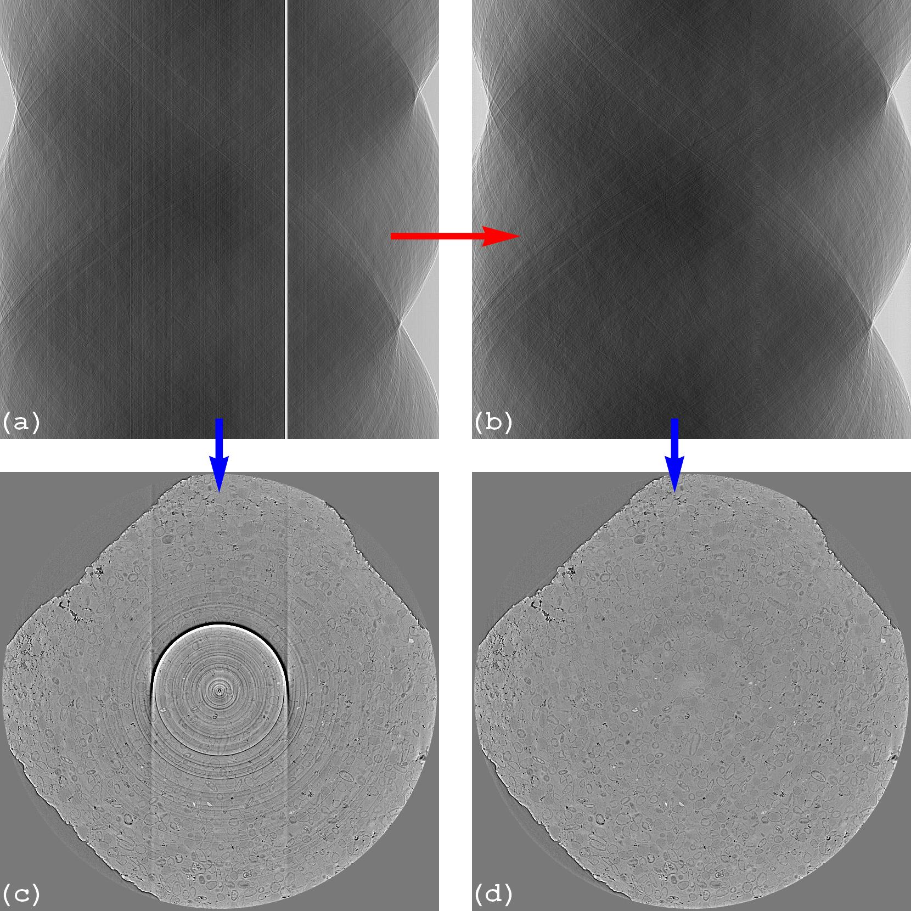
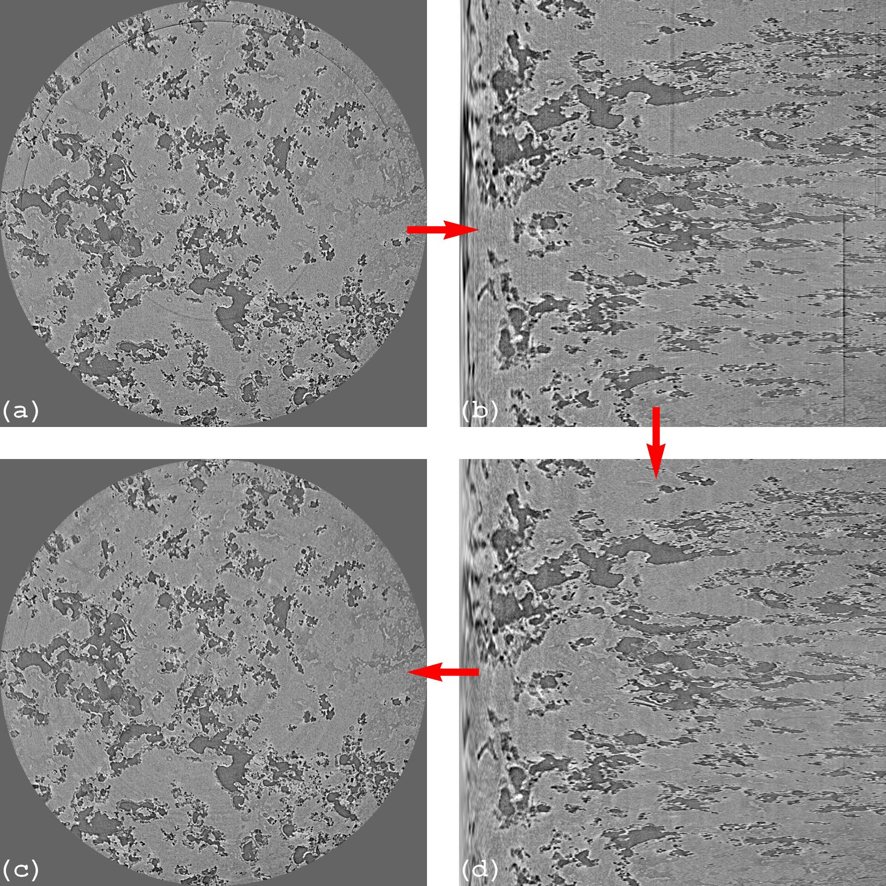
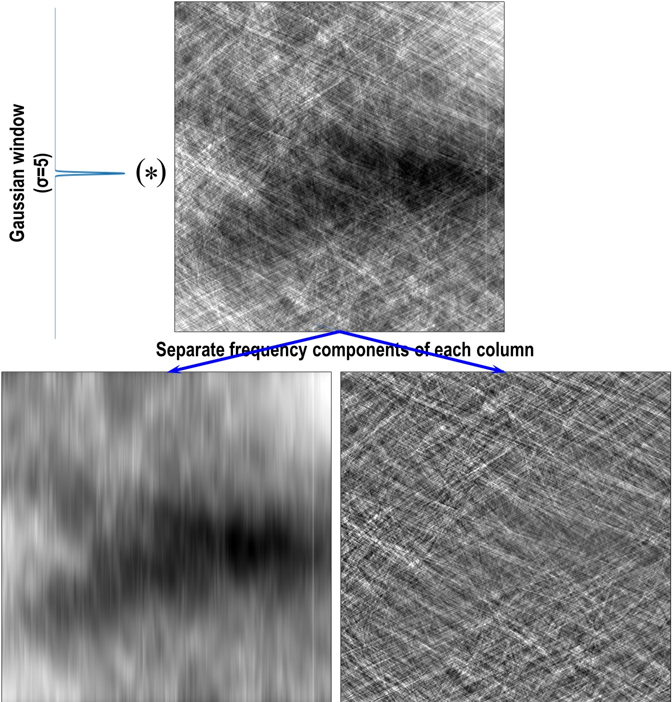
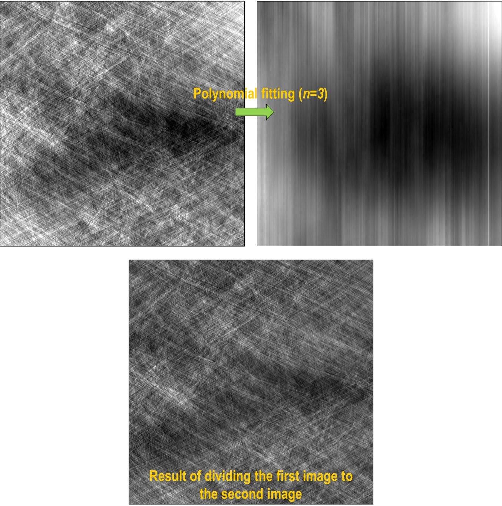
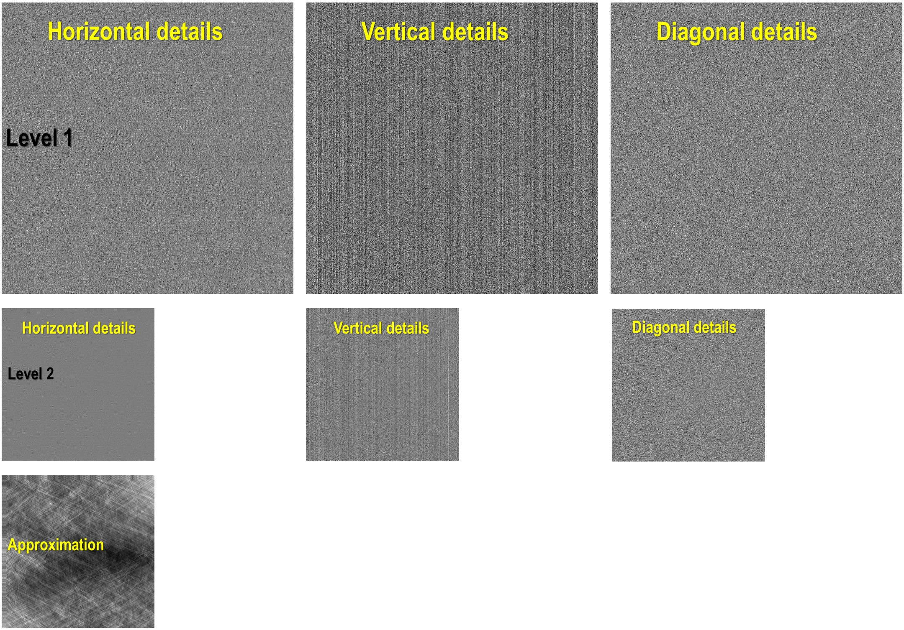
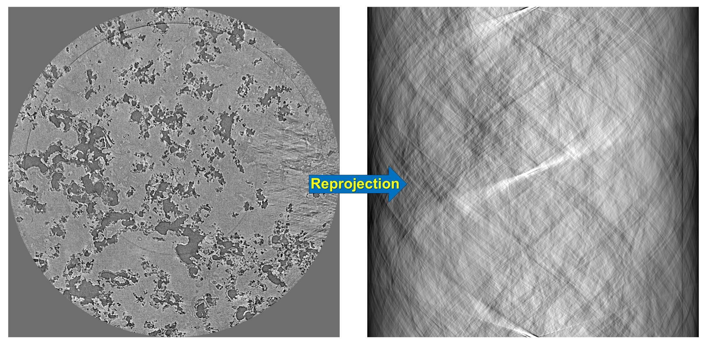

4.3. Methods and tools for removing ring artifacts¶
Algotom provides improved implementations of many methods for removing ring artifacts;
which were published previously by the same author in Sarepy;
to be easier to use and customize. More than that, there are many tools for users to
design their own removal methods.
Note that ring artifacts in a reconstructed image are corresponding to stripe artifacts in
the sinogram image or the polar-transformed image. Most of ring removal methods are actually
stripe removal methods under the surface.

Fig. 4.3.1 Ring removal methods working on sinogram image, known as pre-processing methods.
(a) Sinogram before correction. (b) Sinogram after correction. (c) Reconstructed
image from sinogram (a). (d) Reconstructed image from sinogram (b).¶

Fig. 4.3.2 Ring removal methods working on polar-transformed image, known as post-processing methods.
(a) Reconstructed image before correction. (b) Polar transformation of image (a). (d) Stripe
artifacts removed from image (b). (c) Cartesian transformation of image (d).¶
Users can select different smoothing filters available in Scipy
or in Algotom utility module for removing stripes by passing keyword arguments as dict type:
importalgotom.io.loadersaveraslosaimportalgotom.prep.removalasremsinogram=losa.load_image("D:/data/sinogram.tif")# Sorting-based methods use the median filter by default, users can select# another filter as below.sinogram1=rem.remove_stripe_based_sorting(sinogram,option={"method":"gaussian_filter","para1":(1,21)})
The sorting-based technique, which is simple but effective to remove
partial stripes and avoid void-center artifacts, is an option for other ring removal methods.
The cleaning capability with least side-effect of a ring removal method relies
on a smoothing filter or an interpolation technique which the method employs.
Other supporting techniques for revealing stripe artifacts such as sorting,
filtering, fitting, wavelet decomposition, polar transformation, or forward projection
are commonly used. Algotom provides these supporting tools for users to incorporate
with their own smoothing filters or interpolation techniques.
The technique (algorithm 3 in [R19]) couples an image with an index array
for sorting the image backward and forward along an axis. Users can combine the
sorting forward
method, a customized filter, and the sorting backward
method as follows
The technique
can help to reveal stripe artifacts by separating frequency components of each image-column using a
1D window available in Scipy. Example
of how to use the technique:
# Separate a sinogram imagesino_smooth,sino_sharp=util.separate_frequency_component(sinogram,axis=0,window={"name":"gaussian","sigma":5})# Use a customized smoothing filter heresino_smooth_filtered=apply_customized_filter(sino_smooth,parameters)# Add backsino_corr=sino_smooth_filtered+sino_sharp

Fig. 4.3.5 Demonstration of how to separate frequency components of a sinogram along each column.¶
The technique
can help to reveal low contrast stripes easily by applying a polynomial fit along each image-column.
sino_fit=util.generate_fitted_image(sinogram,3,axis=0,num_chunk=1)# Use a customized smoothing filter heresino_smooth=apply_customized_filter(sino_fit,parameters)# Get back the sinogramsino_corr=(sinogram/sino_fit)*sino_smooth

Fig. 4.3.6 Demonstration of how to apply a polynomial fitting along each column of a sinogram.¶
4.3.2.4. Wavelet decomposition and reconstruction¶
Functions for wavelet decomposition,
wavelet reconstruction,
and applying a smoothing filter to specific levels
of directional image-details are provided.
The following codes decompose a sinogram to level 2. As can be seen in Fig. 4.3.7
stripe artifacts are visible in vertical details of results. One can apply a smoothing filter
to remove these stripes then apply a wavelet reconstruction to get the resulting sinogram.
outputs=util.apply_wavelet_decomposition(sinogram,"db9",level=2)[mat_2,(cH_level_2,cV_level_2,cD_level_2),(cH_level_1,cV_level_1,cD_level_1)]=outputs# Save results of vertical details# losa.save_image("D:/output/cV_level_2.tif", cV_level_2)# losa.save_image("D:/output/cV_level_1.tif", cV_level_1)# Apply the gaussian filter to each level of vertical detailsoutputs=util.apply_filter_to_wavelet_component(outputs,level=None,order=1,method="gaussian_filter",para=[(1,11)])# Optional: remove stripes on the approximation image (mat_2 above)outputs[0]=rem.remove_stripe_based_sorting(outputs[0],11)# Apply the wavelet reconstructionsino_corr=util.apply_wavelet_reconstruction(outputs,"db9")

Fig. 4.3.7 Demonstration of the wavelet decomposition.¶
Users can design a customized stripe-detection method, then pass the result (as a 1D binary array) to the
following function
to remove stripes by interpolation.
4.3.2.6. Transformation between Cartesian and polar coordinate system¶
This is a well-known technique to remove ring artifacts from a reconstructed image
as shown in Fig. 4.3.2.
img_rec=losa.load_image("D:/data/reconstructed_image.tif")# Transform the reconstructed image into polar coordinatesimg_polar=util.transform_slice_forward(img_rec)# Use a customized smoothing filter hereimg_corr=apply_customized_filter(img_polar,parameters)# Transform the resulting image into Cartesian coordinatesimg_carte=util.transform_slice_backward(img_corr)
4.3.2.7. Transformation between sinogram space and reconstruction space¶
Algotom provides a re-projection method
to convert a reconstructed image to the sinogram image. As using directly the
Fourier slice theorem it’s fast compared to ray-tracing-based methods or
image-rotation-based methods.
importnumpyasnpimportalgotom.util.simulationassimimportalgotom.rec.reconstructionasrecrec_img=losa.load_image("D:/data/reconstructed_image.tif")(height,width)=rec_img.shapeangles=np.deg2rad(np.linspace(0.0,180.0,height))# Re-project the reconstructed imagesino_calc=sim.make_sinogram(rec_img,angles=angles)# Use a customized stripe-removal methodsino_corr=apply_customized_filter(sino_calc,parameters)# Reconstructimg_rec=rec.dfi_reconstruction(sino_corr,(width-1)/2,apply_log=False)

Fig. 4.3.8 Demonstration of how to re-project a reconstructed image.¶